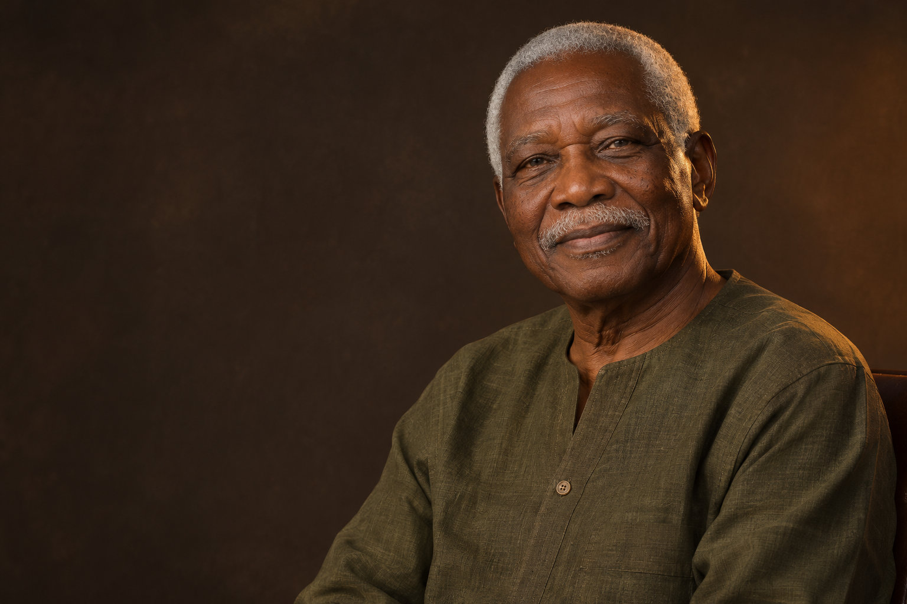

Un livre pour se souvenir
✦
BIZIMBO
Kakou Djidji
1946 · 2025
Akalékro · Côte d’Ivoire

Kakou Djidji
1946 · 2025
Akalékro · Côte d’Ivoire
IZIMBO est né à Akalékro, le 1er janvier 1946. Il portait en lui deux héritages, Ahizi par son père et Sénoufo par sa mère, deux courants de mémoire qui ont nourri son regard sur le monde.
Son histoire commence dans une terre de liens, de récits et de visages connus. C’est là qu’il a appris que l’on ne grandit jamais seul.
Pour accompagner BIZIMBO et partager un instant de prière, de souvenirs et de paix.
Des fleurs blanches et des bougies sont les bienvenues. Vous pouvez également manifester votre présence en allumant une bougie virtuelle sur ce mémorial.
Des regards, des journées simples et des étapes de vie qui continuent de nous inspirer.
Un moment de retrouvailles familiales au village, entouré des siens.
Le patriarche lors de la cérémonie des 50 ans, toujours à l’écoute.
Transmettre les proverbes et la sagesse des ancêtres Ahizi et Sénoufo.
Les jours simples
deviennent des trésors.
Une voix, un sourire, une manière de faire une place à chacun.
Chaque hommage est une page ajoutée à son histoire.
Ton sourire reste notre lumière. Merci pour tout ce que tu nous as transmis, papa.Aïcha Il y a 2 jours
Je me souviens de ta patience et de tes histoires. Elles vivent encore dans nos conversations.Koffi Il y a 5 jours
Ajoutez des photos, enrichissez la biographie et préservez les souvenirs dans un espace familial privé.
Votre hommage sera transmis à la famille pour validation.
Recevez un lien unique par email pour accéder à l’espace privé de la famille.